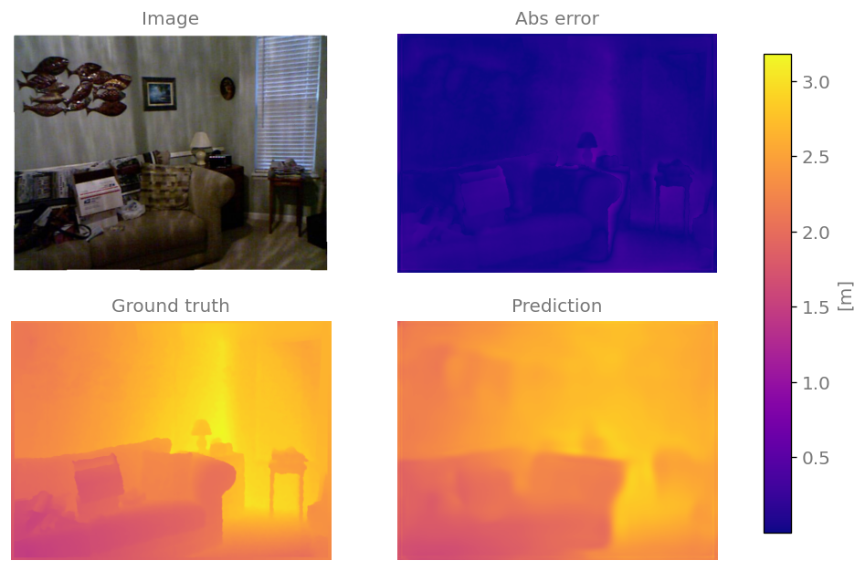
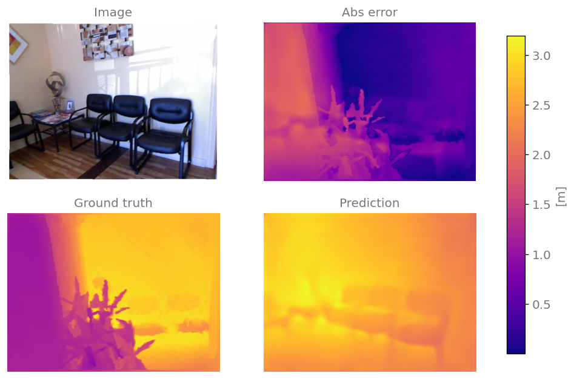
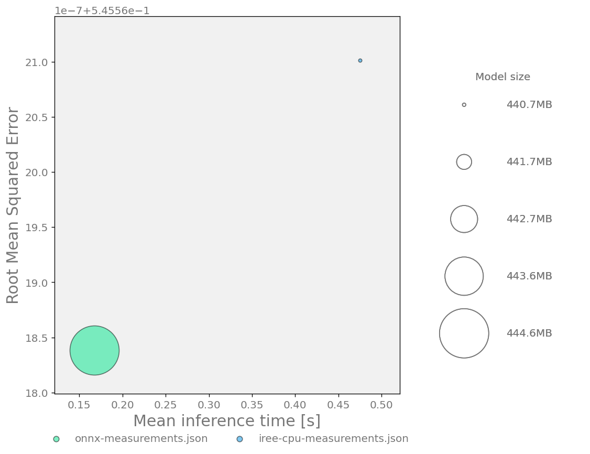

Evaluation and optimization of DINOv2 for depth estimation¶
This example demonstrates how to run, optimize and evaluate a monocular depth estimation model with Kenning.
This demo uses:
DINOv2 model with a regression head trained for monocular depth estimation,
NYUDepthV2 dataset, which includes RGB images of interior scenes with accompanying depth maps.
Prepare an environment for development¶
First, make sure that Kenning is installed in your virtual environment with all the required dependencies.
For CPU-only setup, simply run this command in your virtual environment:
uv pip install "kenning[onnxruntime,tensorflow,object_detection,reports,iree] @ git+https://github.com/antmicro/kenning.git"
For GPU setup, run this command in your virtual environment:
uv pip install "kenning[onnxruntime-gpu,tensorflow,object_detection,reports,iree] @ git+https://github.com/antmicro/kenning.git"
Please note that by default the ONNX Runtime expects a system-wide NVIDIA cuBLAS installation. If you don’t want to install it system-wide, you can instead run:
uv pip install nvidia-cublas
export LD_LIBRARY_PATH=<path_to_your_dir>/.venv/lib/python3.12/site-packages/nvidia/cu13/lib:$LD_LIBRARY_PATH
replacing the python and CUDA versions if necessary.
Evaluation in ONNX framework¶
Running the model¶
We will begin by running and evaluating the model in its native ONNX framework.
For that we can use a script provided in scripts/configs/dinov2-onnx-video.yml
dataset:
type: NYUDepthDatasetV2
parameters:
dataset_root: build/nyu_depth
split_fraction_test: 1
model_wrapper:
type: Dinov2ONNX
parameters:
model_path: kenning:///models/depth_estimation/dinov2.onnx
input_width: 640
input_height: 480
runtime:
type: ONNXRuntime
parameters:
save_model_path: kenning:///models/depth_estimation/dinov2.onnx
execution_providers:
- CUDAExecutionProvider
- CPUExecutionProvider
First, we specify the dataset we want to use for the pipeline. We also set two dataset parameters:
dataset_root- path where we want to save the downloaded dataset files.split_fraction_test- what percentage of the dataset we want to use for evaluation. Since we are not training the model in this pipeline, we can use the entire dataset for evaluation, so we set the parameter to1(100%).
Than we specify the modelwrapper that we want to use and set its parameters:
model_path- path to the saved model weights. By using a special path beginning withkenning:///we can automatically download the weights prepared for thisModelWrapper.input_widthandinput_height- the width and height of images the model expects as its input. The dataset images will be automatically resized to these dimensions before being passed to the model.
Finally, we specify the runtime for the model. The runtime parameters are:
save_model_path- the path from which the runtime will load the model,execution_providers- a list of ONNX Runtime Execution Providers. The runtime will select the first available provider from the list. In this case we first try to run the model on GPU with CUDA, and if it’s unavailable we fall back to CPU.
Once the pipeline config is ready, we can run it with:
kenning test \
--cfg scripts/configs/dinov2-onnx-nyu-depth.yml \
--measurements measurements.json
Which will run inference on all the dataset images and save the results in a measurements.json file.
The file contains data which is not aggregated in any way and is not easily human readable, which is why Kenning provides reporting and visualization features.
Evaluation and reports¶
To generate the report, we need to extend the kenning command with extra arguments:
kenning test report \
--cfg scripts/configs/dinov2-onnx-nyu-depth.yml \
--measurements measurements.json \
--report-path reports/report.md \
--to-html
First, we add the report subcommand to enable reporting features.
Than we specify the path for the markdown report.
Finally, we add the --to-html flag which turns the mardown into HTML with beautifully rendered charts.
NYUDepthDatasetV2 also allows us to set the number of best and worst predictions for visualization.
Let’s extend our dataset config:
dataset:
type: NYUDepthDatasetV2
parameters:
dataset_root: build/dataset
split_fraction_test: 1
save_n_best: 1
save_n_worst: 1
These values default to 5, so you don’t need to set them manually, but here we will lower the values to make the example more concise.
Example report¶
The report contains many generic sections about model size, performance etc. The two sections specific to depth estimation are:
a table showing relevant metrics, such as Mean Absolute Relative Error, Threshold Accuracy (denoted \(\delta\)), as well as regular regression metrics,
a visualization of model predictions, including an original RGB image and heatmaps for original depth labels, model predictions, as well as the model’s absolute relative error.
Following is a part of an example report:
Depth estimation metrics¶
Statistic |
Value |
|---|---|
Mean Average Error |
0.3498284121534387 |
Root Mean Squared Error |
0.521750912261734 |
Mean Absolute Relative Error |
0.1380133881157147 |
\(\delta^{0.125}\) |
0.15234914389593399 |
\(\delta^{1.0}\) |
0.8476118767253278 |
\(\delta^{2.0}\) |
0.9766854026483781 |
\(\delta^{3.0}\) |
0.994993038032695 |
Best sample predictions¶


Worst sample predictions¶


Optimization with IREE¶
Kenning allows us to optimize and evaluate the model. One of the options for model optimization is compiling it with the IREE compiler.
IREE is a MLIR-based compiler which lowers AI models to a unified Intermediate Representation, which can be further compiled to an executable bytecode for running on various platforms such as desktop, microcontrollers or server environments.
Optimization with IREE for CPU¶
Let’s define an optimization pipeline for compiling DINO for our host CPU:
dataset:
type: NYUDepthDatasetV2
parameters:
dataset_root: build/nyu_depth
split_fraction_test: 1
model_wrapper:
type: Dinov2ONNX
parameters:
model_path: kenning:///models/depth_estimation/dinov2.onnx
input_width: 640
input_height: 480
optimizers:
- type: IREECompiler
parameters:
compiled_model_path: ./build/iree-compiled
backend: llvm-cpu
compiler_args:
- iree-hal-target-device=local
- iree-llvmcpu-target-cpu=host
- iree-opt-level=O3
runtime:
type: IREERuntime
parameters:
save_model_path: ./build/iree-compiled
driver: local-task
runtime_args:
- task_topology_group_count=8
The dataset and model configurations stay the same.
After that we introduce the list of optimizers we want to run on the model - in our case only an IREECompiler. The most important compiler parameters are:
backend- what backend we want to use for actual code generation, in our case LLVM for the cpucompiler-args- arguments passed directly to the IREE compiler, in our case:iree-hal-target-device=local- we are compiling for the local machineiree-llvmcpu-target=host- use CPU/architecture features (such as vector extensions) which are supported by the local host CPUiree-opt-level=O3- enable the highest level of optimization
We also specify the runtime and configure it’s parameters:
driver- what IREE Runtime HAL driver we want to use.local-taskis an async multi-threaded CPU driverruntime_args- here we specifytask_topology_group_count=8which instructs the IREE Runtime to use 8 threads for model execution. While the runtime tries to guess the optimal thread count for a given model and host configuration, it often guesses incorrectly so it’s best to experiment with this parameter.
Note
Additional optimizations can be enabled by adding an iree-opt-data-tiling argument to the compiler.
However, as of writing, this argument breaks the DINOv2 compilation.
To run the optimization pipeline and evaluate the resulting model, we just need to add a new optimize subcommand and change the config name:
kenning optimize test report \
--cfg scripts/configs/dinov2-iree-cpu-nyu-depth.yml \
--measurements measurements.json \
--report-path reports/report.md \
--to-html
We can than inspect the report to see if the model performance has improved without significant degradation of the metrics.
Caution
By default the NYUDepthDatasetV2 saves several best and worst prediction images and depth maps.
The saving can be resource intensive and can introduce random latency spikes in the inference loop.
Because of that, when evaluating model performance, it’s best to set save_n_best and save_n_worst parameters to 0.
Optimization with IREE for GPU¶
To compile the model for a CUDA-enabled GPU, we can use the following config:
dataset:
type: NYUDepthDatasetV2
parameters:
dataset_root: build/nyu_depth
split_fraction_test: 1
model_wrapper:
type: Dinov2ONNX
parameters:
model_path: kenning:///models/depth_estimation/dinov2.onnx
input_width: 640
input_height: 480
optimizers:
- type: IREECompiler
parameters:
compiled_model_path: ./build/iree-compiled
backend: cuda
compiler_args:
- iree-hal-target-device=cuda
- iree-cuda-target=sm_86
- iree-opt-level=O3
- iree-preprocessing-pass-pipeline=builtin.module(util.func(iree-global-opt-raise-special-ops, iree-flow-canonicalize), iree-preprocessing-transpose-convolution-pipeline, iree-preprocessing-pad-to-intrinsics, util.func(iree-preprocessing-generalize-linalg-matmul-experimental),iree-preprocessing-convert-conv-to-channels-last,iree-preprocessing-convert-conv-filter-to-channels-last{filter-layout=fhwc})
runtime:
type: IREERuntime
parameters:
save_model_path: ./build/iree-compiled
driver: cuda
The main differences between the CPU config include:
backend,iree-hal-target-device, anddriverchanged tocudairee-cuda-target- the compute capability of the GPU (sm_86stands for compute capability 8.6)iree-preprocessing-pass-pipeline- custom arrangement of compiler preprocessing passes tailored for the DINOv2 model that reorganize convolution layout for faster GPU inference
Attention
You should adjust the iree-cuda-target according to your GPU compute capability.
You can check your GPU compute capability in the NVIDIA documentation.
To run the CUDA optimization pipeline, it’s enough to change the config name:
kenning optimize test report \
--cfg scripts/configs/dinov2-iree-cuda-nyu-depth.yml \
--measurements measurements.json \
--report-path reports/report.md \
--to-html
Comparing different models¶
Kenning also provided support for comparing different model performance and metrics.
Saving measurements files for comparison¶
To compare different models, we first need to save measurement files for multiple models. Let’s collect them for the native ONNX Runtime pipeline and for the model compiled with IREE for the CPU:
kenning test \
--cfg scripts/configs/dinov2-onnx-nyu-depth.yml \
--measurements onnx-measurements.json
kenning optimize test \
--cfg scripts/configs/dinov2-iree-cpu-nyu-depth.yml \
--measurements iree-cpu-measurements.json
Please note the different paths of the measurement files.
Generating the comparison report¶
Later we can generate a comparison report using:
kenning report \
--measurements onnx-measurements.json \
--measurements iree-cpu-measurements.json \
--report-path reports/comparison_report.md \
--to-html
The generated report now includes many sections with comparison charts. Below is an example of a bubble chart showing:
mean inference time (x axis),
selected model metric - in this case RMSE (y axis, see below for customizing this metric),
model size (bubble size).

We can see that the IREE model in this case is actually slower but smaller, while achieving the same metric values (down to rounding precision errors).
Customizing the compared metric¶
The models are compared based on a selected metric - RMSE by default for depth estimation. We can change this metric by adding an extra command line argument to the report generation command:
kenning report \
--measurements onnx-measurements.json \
--measurements iree-cpu-measurements.json \
--main-quality-metric=mare \
--report-path reports/comparison_report.md \
--to-html